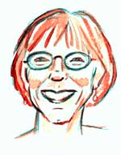

This is an archived copy of History Matters, provided by the Roy Rosenzweig Center for History and New Media. To explore this content in a new interface, visit Who Built America?.


Nancy A. Hewitt, Professor of History and Womens Studies at Rutgers University, received her Ph.D. in History from the University of Pennsylvania in 1981. She has written extensively on American womens activism and womans rights in the nineteenth and twentieth centuries. Her publications include Womens Activism and Social Change: Rochester, New York, 1822–1872; Southern Discomfort: Womens Activism in Tampa, Florida, 1880s-1920s; and most recently, “Re-rooting American Womens Activism: Global Perspectives on 1848.” Prof. Hewitt is also editor of Blackwells Companion to American Womens History and of Women, Families and Communities, a two-volume collection geared to the United States history survey. She has also worked as a historian at the Seneca Falls Womans Rights National Historical Park; led numerous workshops on integrating race and gender into the curriculum; and participated with a group of womens historians in a project housed at SUNY-Binghamton to provide web-based teaching materials on women and social movements in the United States.1. What drew you to history teaching? Were you, for example, drawn by the subject matter, by particular teachers, or something else?
I became a historian a bit by accident, but a history teacher by plan. As an undergraduate at Smith College, I took a lot of history courses because I loved them. I had one especially inspiring teacher at Smith, Allen Weinstein, who taught both halves of the American History survey. I took the course just as I was being introduced to the antiwar movement in 1969–70, and was totally amazed (and shocked) by the critical version of United States history that he presented, a version at odds with most of what I had learned in my small town, western New York state high school. Then I dropped out of Smith, flunked out of the University of Toronto, worked for a year, and when I went back to school at SUNY-Brockport, I discovered I could graduate most quickly if I became a history major given my transfer credits.
At Brockport, I had two fabulous history teachers/mentorsRobert Smith and Susan Stuardand they encouraged me to consider pursuing a Ph.D. By that time, the Vietnam War was winding down, at least on the United States side, and I had become a radical feminist. On both counts, I was convinced that if Americans knew their/our history, really knew it, they would make the right and just decisions regarding foreign interventions and civil rights/social justice at home. It was a naive thought, but it propelled me to graduate school and to college teaching.
2. When did you start teaching? What are the places you have taught?
I started student teaching while at SUNY-Brockport. I planned initially to get a certificate in secondary social studies, but discovered in my first student teaching experience that I didnt have the personality to keep middle school students interested in what I had to say. My next teaching stint was at the University of Pennsylvania as a teaching assistant, and I learned a lot from that experience, both from faculty and from other graduate students with whom I TAd. My first independent experience as a teacher came in my last year of graduate school when I taught a two-semester womens history survey at Stockton State College in New Jersey and a one-semester United States survey at Philadelphia Community College. Both were intense experiences, and they really expanded my sense of what teaching was all about. I had a lot of older students at PCC who were highly motivated but not well prepared, and my first group of womens history students at Stockton State were excited about both womens history and feminist politics.
I think those courses were critical in helping me to succeed in the job market in 1981, when I received an offer of a tenure track job at University of South Florida. USF had a lot of older returning students as well as a young Womens Studies Program and a very progressive history department. I taught at USF for eleven years, with most of my courses in early American history and womens history. I learned a ton about teaching there, and carried those lessons into my later jobs at Duke University (1992–98) and then at Rutgers (1998-present).
The biggest difference at Duke and Rutgers was the graduate teaching. I had taught small masters degree-level courses at USF, but from 1992 on Ive had the opportunity to teach incredibly bright and highly motivated doctoral students, which has been a wonderful experience. Ive also cross-listed a number of graduate and undergraduate courses in Womens Studies over the past decade, and now teach a regular course on Comparative Feminisms in the Womens and Gender History Department at Rutgers, which I love. I have been fortunate in that Ive had the opportunity to teach a wide range of students, from older returning undergraduate students to traditional undergraduate and graduate students. At USF and Rutgers, Ive taught many first-generation college students, while at Duke, I often taught 3rd, 4th and 5th generation college students. In all of these institutions, Ive had a wide range of ethnic and racial groups in my classes, although at Duke, these differences depended more on the recruitment of international students, and the affluence of most undergraduate students at Duke seemed to dilute their ethnic/racial identities. Teaching this incredible variety of students forced me to think, from the very beginning of my career, about reaching students at their own level.
I was committed to class discussions and group projects because of my interest in feminist and radical pedagogy; but I realized very quickly at USF that such interactive methods were necessary if I was going to figure out how the students themselves thought about the world, the academy, and the learning experience. I was also convinced by educational research that students retained more material if they actively engaged in the learning process. Indeed, during my years at USF, I was a bit of zealot for participatory or active learning methods. I led a faculty workshop in my department with a senior male colleague who employed the Socratic method in his classes.
I also became involved early on with curriculum integration projects that focused on including race, gender, and ethnicity in all survey level courses in the humanities and social sciences. I was convinced that if more students saw their own life experiences reflected in the classroom, they would be more engaged with learning. Between about 1985 and 1995, I participated in a dozen teaching workshops for college, high school and middle school teachers, all aimed at curriculum integration. In each of these projects, I used the opportunity to introduce teachers to a variety of active learning techniques as well. This work was enormously satisfying, and time-consuming, and it all emerged from those early experiences with a diverse body of undergraduates at USF. It was those students who helped me see the practical value of the radical and feminist pedagogical philosophies I had been introduced to earlier.
3. Which courses have you taught?
In addition to the courses mentioned above, Ive also taught courses on Women and Work, Family and Community History, an undergraduate Theory of History course (the capstone for history majors at USF), Womans Rights in America, and Nineteenth Century United States History at the undergraduate level; and graduate courses on Theory and Methods in History; Sex, Class and Race in the Americas; American Womens History to 1850 and since 1850; Women, Politics and Everyday Life (with Belinda Davis); the Womens and Gender History Research Seminar; and the Womens and Gender History Problems and Directed Readings.
4. Which are your favorite courses to teach? Why?
I love teaching the American history survey, and have taught the first half of the survey nearly every year at USF and Rutgers. It was the course that first got me excited about history, and it is the one course where I get the greatest mix of students and have the opportunity to introduce them to new perspectives, topics, and interpretations. Especially when I first started teaching at USF, I found that I could attract many more students to the American womens history courses if they took my American history survey course first. Some were nervous about signing up for womens history then, thinking it was too political or too radical or would be taught by someone who hated men, etc, etc. But once students took the survey with me, then some were more willing to try a womens history course with me.
I also love teaching the Comparative Feminisms course because it allows me to introduce womens and gender studies students to historical perspectives and to capture a new version of the activism/academic links that attracted me to graduate work in the first place. The graduate courses in womens history and on Sex, Race and Class in the Americas have also been incredibly rewarding. They drew me into teaching about Canadian, Latin American and Caribbean womens history alongside United States womens history; and they have continually enriched both my scholarship and my undergraduate teaching by reminding me how exciting intellectual debate, primary research, and new work in these fields can be.
5. In what formats do you teach the United States History Survey, e.g., lecture? Discussion? Etc.
Ever since I began teaching the United States history survey, I have combined lecture and discussion formats. At USF, I generally taught a class of fifty-five students, and I lectured about two-thirds of the time and divided students into discussion groups the other third. Over the past twenty plus years, I have devised a wide range of group projects. Some are focused on each group responding to the same set of questions about readings or sources; in other cases, I ask each group to provide the answer to one piece of a puzzle so that taken together the groups answer a larger question. At Duke I only taught the survey once, and the teaching assistants ran discussion sections while I lectured. I missed participating in the discussions because they were an excellent way for me to find out how students were processing and creatively working with material I presented in lectures or that they read in assigned books and articles.
Thus, when I got to Rutgers, I was happy to go back to my old format. For three years, I taught a freshman only section of the survey here, limited to forty-five students. In that course, I used the format that worked so well at USF. Next fall (2005), I will teach a 150-student survey for the first time, with sections and TAs; but I will run one of the discussion sections myself, allowing me to get some of the benefits of the way I have traditionally taught the course.
6. What are the biggest themes that you try to convey? What are the organizing principles of your survey course?
Throughout my years of teaching the survey, I have focused on American history as a story of struggle and as a dynamic struggle among diverse and often competing groups. These were the themes that hit me with such force as an undergraduate because they were so at odds with how I had learned American history while growing up in the 1950s and 1960s. At the same time, I organize much of my course around standard events and chronologieswars, political developments, social upheavals that would be familiar to most students. I find it easier to get students to grasp themes of struggle, diversity and conflict if they feel comfortable with the basic chronological and topical structure of the course. So they might learn a different version of the Pocohantas story or get a different sense of African Americans participation in the process of emancipation, but they will feel comfortable with the focus on Pocohantas or on the Civil War and Reconstruction. When I first began teaching in the early 1980s, it was still considered daring to incorporate gender, race and class into the general survey. I have been doing this for years, and now most textbooks have caught up with this emphasis, but I still try to push the boundaries of what is included in a survey by incorporating histories of sexuality now or using web-based materials, or focusing on global perspectives on United States history. In part, I am simply following the trends that have developed in American and womens history over the past three decades. But I am also trying to emphasize themes that will reflect current political issues in the United States since it was precisely that blend of history and politics that sparked my own interest in the late 1960s and early 1970s.
When I first started teaching, many students at Philadelphia Community College, Stockton State, and USF came to history courses already engaged with antiwar, civil rights, and/or feminist politics. Then I felt like my most important job was to get them to see how contemporary struggles were rooted in the past so that they stopped thinking that current events were an aberration or exception in American history. Also by teaching about the diverse responses of women, minorities, and workers to earlier forms of discrimination and oppression, I sought to give them a sense of the variety of ways that the less powerful have responded to the powers that be. Beginning in the early 1990s, however, I faced many more students who grew up in a more conservative era, had little interest in politics, or assumed that United States policies, domestic and foreign, should not be questioned. In many ways these students mirror my own state of mind when I reached college. In this context, I work harder to get students to come to grips with the contradictions in the American past particularly between claims for democracy and equality at home and abroad and the many instances where policies and practices were at odds with such claims. At the same time, I want them to develop their own critical skills, to learn how to analyze and critique the claims of those in authority, including me.
7. What are your most important goals in teaching the survey course?
I want to get students to engage with a range of evidence and perspectives so that they come to understand history as both a dynamic process of development and as a series of competing interpretations. I also want them to come away with a basic sense of chronology and geography; I do think getting some facts down is critical if we want then to move to the next step of interpreting those facts. And I want them to see that current events often have deep roots or resonance with past events and developments. Globalization, for instance, did not begin in the late 20th century, but was a process that took diverse forms throughout American history. I am not looking for easy links between past and present, but rather introducing students to new perspectives on the present by focusing on the complex dynamics of the past.
8. Do you find that your students come to the material with political interests similar to those you discussed in your own background?
It has been fascinating to teach over the past twenty plus years as student politics and the larger national and international political landscape have been transformed. As I noted above, many more students embraced feminist, antiwar and civil rights politics when I began to teach at the college level then do now. In nearly every class I taught then, whether the United States history survey or an upper level womens history course, a few students would “see the light” and have a political conversion experience similar to the one I went through at Smith College. Others were already politically engaged, and it was easy to generate discussions that linked events in early American historytreatment of the Indians, slavery and emancipation, womans rightsto contemporary issues. Now, I still have small circles of students with progressive politics in my classes, but they often feel isolated or at odds with the majority of their peers. And its harder to get the large number of conservative undergraduates to see that the struggles over race, class, and gender that occurred in previous centuries have much to do with contemporary inequalities. Instead, they often interpret such instances of inequality as signs of how far weve come since they see the United States today as a beacon of equality and democracy in the world.
Indeed, at Duke, I sometimes had a hard time connecting with the undergraduate students. There were many incredibly bright students at Duke, and there were certainly some who were very engaged politically and concerned about what seemed to be backsliding on feminist, racial and global politics. But many were very happy with the state of the nation and blamed the economic hardships experienced by African Americans or new immigrants or single mothers on their own failures to take advantage of the opportunities offered them. When I arrived at Rutgers in 1998, it was wonderful to face once again a more diverse student body and one that, because its members wielded fewer material resources, was less certain about past and current policies regarding welfare, affirmative action, and womens rights. Still, they had not experienced the civil rights/Black emancipation movements or the Vietnam War, and many thought feminism was dead or old hat. Moreover, many more were (and continue to be) cynical about individuals capacity to change the world than were college students in the 1960s and 1970s. I certainly can no longer take for granted that students in my courses will have political conversion experiences, but I do still hope that they come out of my courses with a more critical perspective on the world, a fuller sense of the struggles it has taken to get where we are today (for better or worse), and some improvement in their ability to express their views, whatever those are. And it seems more important than ever to serve as a mentor for that minority of students who want to take on the world, to create social change, to carry on the diverse traditions of American activists.
9. What do you most want students to take away from a US survey course with you?
Two thingsFirst that American history is something new and excit-ingthat even students who grew up in the US and have been learning about American History all their lives can discover new ideas and interpretations, even new people and events, in the United States survey. And second, that they are a part of American history, whether they are women or men, African American, Latino/Chicano, white, immigrant, working class or middle class, urban or rural, planning on a career in politics or at Wal-Mart. I want them to see that ordinary folks do make a difference in the way that events unfold, even though the difference they make may not be quite what they expected. I guess, ultimately, I want them to come away from my course believing that history matters.
10. What has been your most memorable teaching experience?
There have been so many wonderful teaching experiences over the years, almost all of them related to students who really got what I was trying to get across. For some reason, most of my best memories are from USF, which could either mean that the first years of teaching are the most exciting, or that Ive gotten used to having wonderful students Im not quite sure.
I had one American Womens History class at USF, with a lot of older returning students, a couple of USF staff members, and then a mix of more typical students from freshman to seniors. The class was also pretty diverse in terms of race, ethnicity and sexual orientation. At first, I was incredibly nervous about how to deal with all these different kinds of diversity. But it turned out to be one of the best classes I ever taught. There were so many distinct, and competing points of view, and the older students and staff were happy to leap in, debate, challenge others, etc. Fortunately, the typical age students took the challenge, and rather than becoming quieter, they became more talkative. Although a lot of the magic in that class was the result of the students themselves, they were convinced it was me and nominated me for a college teaching award (which I received). I still think it was the skills of those non-traditional students in arguing my case, as they had argued everything else, that led to my award. After that, I was always excited when I had a really diverse class. I came to see it as an asset rather than a problem.
11. What have been your worst/best teaching experiences?
The worst experiences I had in teaching involved students who were traumatized in various ways, and who came to me, or in the very worst case, didnt come to me, with their problems. I felt like I should be able to do more than I could in terms of providing support, help, answers. Having come into teaching when there were still few women, and very few senior women, in universities, it often fell to young women faculty like myself to deal with a whole range of issues that feminists had raised over the past decade. I was certainly happy that women had started to speak out about abortion, rape, divorce, sexual harassment, etc., etc.; but I had not expected to have so many students come to me expecting help, support, or answers. I had never thought about teaching history in terms of experiences generated outside the classroom, especially experiences that required knowledge and skills that I didnt have. I quickly learned about the services available at USF to help students deal with life crises; but sometimes it seemed too callous to tell a student to go to a different office, or call some unknown counselor, when they desperately needed a sympathetic ear.
Two cases in particular have remained with me throughout my years of teaching. I had two students who were beaten and raped while they were taking a class from meone at USF and one at Duke. One reported the rape, and the other didnt; and both finished out the semester in which the assault took place. Of course, I could be supportive of them as far as their coursework went and could lend a sympathetic ear whenever they wanted to talk; but it felt like that was way too little in these cases. And it seemed to me that every other week, the class was either reading something about sex or talking about sexI was so self-conscious each time the subject came up for fear it would upset these students. Of course, I knew I probably had students in my courses nearly every semester who had been raped, but in these two cases it was so immediate. I still think of these students and wonder how they coped with such a frightening experience at a time when so many of their peers were simply enjoying life and imagining that they were safe from the real world.
I also had a student in my class one time who scared mewho just seemed wierd. I would never let him come to my office to talk with me, but always met him just outside the classroom or in the hallway in front of my office. One day after class, he left campus, drove to the home of his estranged wife and murdered her and her mother and kidnapped their two children. The police eventually caught him and rescued the children, but it shook everyone in the class, including me.
This episode, like the rapes, reminded me, again and again, that the university is no ivory tower isolated from the rest of the world. In fact, campuses and campus housing can be particularly dangerous places. I seem to get fewer and fewer students coming to me with crises like these than I did early in my career. I hope that means that campus services are better equipped to deal with issues like sexual harassment, rape, and other issues. But I suppose its just as likely that students now go to younger faculty members, who are still struggling, as I once did, with how to do the right thing by students who needed you to be much more than a good teacher.
The best teaching experiences occurred when groups of students clicked. One year at USF I had a number of women basketball players in my United States history survey class. They were great, and I started going to all the womens gamessomething I still do. (And on December 29, I was rewarded for my persistence by seeing the Rutgers womens team defeat Tennessee!) In other cases, Ive had individual students in my surveys who really got turned on to history, especially womens history. Some were school teachers coming back for extra credits, or undergraduates who planned to teach middle school or high school or who decided to go on to graduate school in history, or to write an honors thesis in womens history. Those are very exciting moments, and Ive been fortunate to have them from my first year at USF right up to this past year at Rutgers. In fact, one of my best undergraduates from two years ago is now applying to graduate programs in history, and shell be dynamite.
The other wonderful experience is having students whose dissertations I directed, many of whom also TAd for me, go out and start teaching history themselves. I learn so much from them, get new ideas and new perspectives; and they carry on a lot of the ideas about collaborative learning and group projects that I began using more than twenty years ago.
12. What interests students most in your classes?
Students love to learn more about the personal lives of famous people, especially material that makes them seem more like real individuals with families, problems, challenges, etc. One fact that never fails to amaze them is that Pocohantas was only twelve or thirteen years old when she “saved” John Smith. When I try to get them to think about the implications of that fact, of her position in Powhatan society, as one of Chief Powhatans several daughters, they begin to see the differences between myth and history. In a similar way, they are interested in grappling with how ordinary people react to extraordinary challengesfor instance, soldiers in the midst of the Battle of Gettysburg. They are used to learning about such events from the perspective of presidents or generals; only a few have delved into the experiences of ordinary soldiers. Many students, but especially women, African Americans, and Latinos/Chicanos, are fascinated by hearing about the place of people like them in history. This is particularly true when I teach the first half of the United States survey, a period in which women, Blacks, Mexican Americans, and Native Americans have either been completely absent or presented only as victims. Giving such groups agency, while recognizing the incredible constraints under which they acted, always draws enthusiastic comments from students. Of course, it also draws criticism from some students, those who see real history as political and military history of great leaders, meaning powerful white men. But thats a critique I am willing to live with, and now and then I can even convince those students that we cant understand great leaders without understanding the larger society from which they emerged.
13. How has teaching changed over your career?
Because of the different institutions in which Ive taught, my teaching has changed a lot. At both USF and Rutgers, I taught/teach large classes with limited resources. In both universities there are a significant number of incredibly bright students, but also a large number of students who need substantial assistance in fundamentals, especially writing and reading skills. At Duke, I taught much smaller classes, had much more help from TAs, and had fewer students who required remedial help in areas like writing. At the same time, students at Duke were much less diverse in terms of socioeconomic status, race/ethnicity and age than those at Rutgers or USF, which put a much greater burden on me as a teacher to incorporate diverse perspectives into the courses I taught. I couldnt assume that the students themselves would bring those perspectives with them.
I certainly work as hard now on teaching as I have since my last years at USF. Ive gotten more comfortable in the classroom, have more well developed lectures and class projects, etc. So its not like my first few years at USF, when I was trying to figure out what worked and what didnt. But its far more work than when I was at Duke and had a TA for any class that had forty-five students or more. Once I team taught a course there with three TAs and seventy-five students. And neither I nor the other professor ran a discussion section so we did no grading. I dont have those luxuries anymore, but I love the incredible range of students I teach at Rutgers, and I am just learning to live with lots of grading. For me the move to Rutgers is still worth it because of the universitys incredible strengths in womens history and womens studies at both the undergraduate and graduate levels. And I get to teach the first half of the United States history survey on a regular basis, which I really do love to do.
The other big change in teaching over the course of my career is the advent of new technologies. I now regularly use website assignments, such as class projects based on the Women and Social Movements Website at SUNY-Binghamton [http://womhist.binghamton.edu] or sites on the Salem Witch Trials, the Battle of Gettysburg, slave narratives, plantation diaries and account books, etc., etc. I have not yet mastered PowerPoint or WebCT, but that too will come. I dont think the new technologies can make you a good teacher, but I do think they can enhance what you do in the classroom and make it more exciting for students who have been raised on computers and the internet. Of course, the web also adds a whole new raft of problems regarding cheating, and that is a pain. The only up side is that these problems are so widespread that departments now work collectively on addressing problems of plagiarism etc, whereas in the past, it was often dealt with in isolation, on a case by case basis. Overall, the benefits of this new technology definitely outweigh the problems.
14. What, in your view, constitutes good teaching?
I think good teaching can come in many forms. For me what is critical is that teachers work to their strengths. I was never going to be the kind of spellbinding lecturer that was the model of pedagogical greatness when I got out of graduate school (in 1981). But I was an excellent discussion leader as a TA, and I had read a lot of work in feminist and other progressive pedagogies that emphasized active learning and student engagement with primary sources, debates, etc. So I decided early on that I was going to incorporate discussion into my teaching no matter what size the class. Last year I taught an eighty-five student survey in American Womens History without a TA and regularly broke the room up into groups of eight or nine students each to analyze documents, websites, or articles. It was certainly a bit chaotic at times, but it definitely engaged most students in new ways and reminded them that learning was a dynamic process.
I am less self-righteous about this teaching technique now than I used to be. I did think early on that my colleagues, almost all men, who simply lectured to their students were doing them a disservice. Now Ive decided that some faculty really are terrific lecturers and that they can best convey information through that medium. Others are more like me, strong discussion leaders, who can integrate lecture and discussion effectively. Some of my younger colleagues have really honed their high tech skills, and can present amazing material via Power Point and CDRoms. Of course, I have also had colleagues at the various universities where Ive taught who did not care much about teaching, and didnt think much about teaching strategies. I am not sure that it would have mattered which techniques they used, as they were simply not engaged by undergraduate education. Teaching was what they had to do to carry on a career in research and publication.
I feel fortunate because for me, teaching has enriched my research and writing and visa versa. I think that if you can develop a teaching style that works to your strengths and a vision of yourself that combines teaching and research as central to your life as a historian, then you will create a fulfilling career for yourself, and one that is rewarding in a range of ways.
15. What tips would you give to a new history teacherparticularly someone approaching the survey course?
My tips for new teachers, especially in survey courses, emerge from my thoughts on good teaching. Hone your best skills, find a comfort zone in the classroom so that you learn to enjoy teaching and see it as intellectually challenging. Survey courses can wear you down because of their size, the writing and grading expectations, the wide range of students in any one class, and the fact that you may teach the same course over and over again. But make the survey your friend! It is the best place to introduce students to your own perspectives on the past, to recruit good students for your upper level courses, to introduce graduate students to innovative teaching techniques and strategies, and to remind yourself of the larger narratives that provide the context for your own, more focused, research and writing.
The first couple of times you teach the survey, treat it as a learning experience. Get as much advice going in as you can about what students find interesting to read, how capable they are in terms of writing assignments, what kinds of exams are expected by your department, etc. It is incredibly frustrating for both the teacher and the students if you teach at a level that is too high or too low for the students in your class. Keep experimenting, including revising assignments in the midst of the semester, if it seems like the students are either overwhelmed or bored. Ask former teachers or fellow graduate students who have already taught the survey to send you syllabi, group project assignments, etc. Teaching is a collective enterprise in the sense that we all benefit from sharing ideas, tips, even lecture outlines. Then over the years, you want to both polish what you have developed and to introduce new ideas, books, projects, assignments, lectures. To keep the survey fresh means ordering a new book, using a website in place of an article, trying out new video clips or slides, or introducing a whole new lecture or discussion topic periodically. Once you have a firm foundationwhether thats a full set of lectures, a series of PowerPoint presentations or a group of collaborative projects and discussion topicsthe survey can be a joy to teach. And even getting to that foundation can be less painful if you see it as a long term investment of time and energy, and if you remember that for many of us, a college-level survey course was what captured our imagination and started us thinking about becoming a historian in the first place.
Interview conducted by Sharon Leon; completed in May 2005.